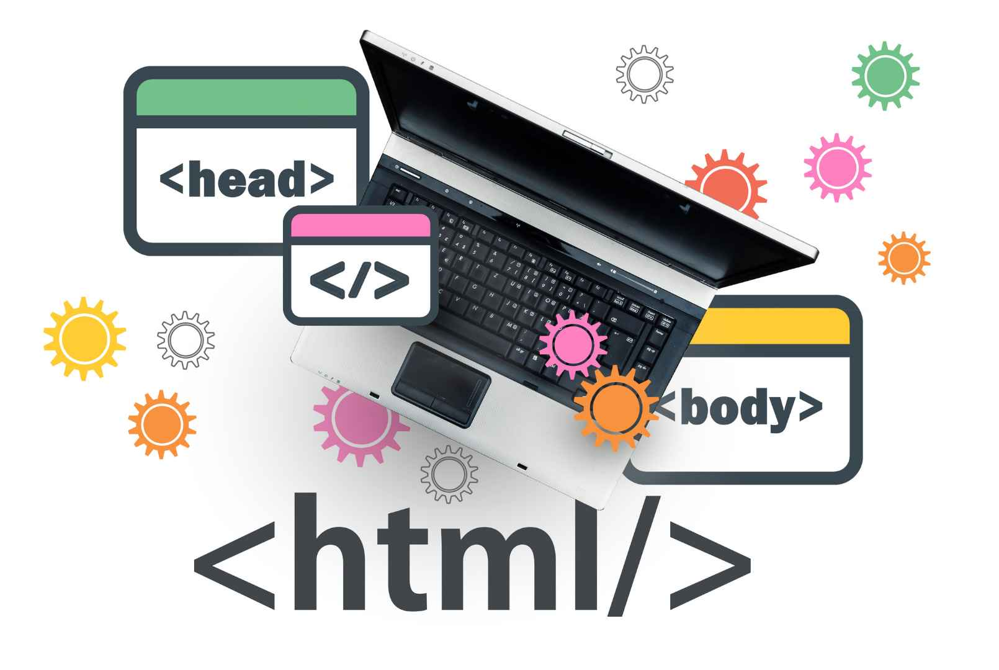

HTML, CSS y Javasript: ¿Para que sirve cada lenguaje?
HTML, CSS y JavaScript son esenciales para crear sitios web. HTML estructura el contenido, CSS define su estilo visual y JavaScript añade interactividad. Además, los lenguajes de programación permiten a los desarrolladores escribir instrucciones para que las computadoras realicen tareas específicas. Juntos, forman la base para experiencias web modernas y funcionales.

HTML (HyperText Markup Language):
HTML es el lenguaje de marcado fundamental para la creación de páginas web. Se utiliza para estructurar el contenido, permitiendo definir diversos elementos como encabezados, párrafos, imágenes, enlaces, listas y formularios. HTML establece la jerarquía y organización del contenido, lo que facilita su interpretación por los navegadores web. Es esencial para construir la base de cualquier sitio web, ya que proporciona el esqueleto sobre el cual se aplica el estilo y la interactividad.
CSS (Cascading Style Sheets):
CSS es un lenguaje utilizado para describir la presentación y el diseño de un documento HTML. Permite a los desarrolladores aplicar estilos como colores, fuentes, márgenes, bordes y layouts, mejorando la estética de las páginas web. Con CSS, es posible crear diseños responsivos que se adaptan a diferentes tamaños de pantalla, lo cual es crucial en la era de los dispositivos móviles. Además, CSS permite separar el contenido de la presentación, lo que facilita el mantenimiento y la actualización de los estilos en un sitio.
JavaScript:
Es un lenguaje de programación que añade interactividad a las páginas web, permitiendo crear elementos dinámicos y responder a las acciones del usuario. Facilita la creación de experiencias web modernas e interactivas.